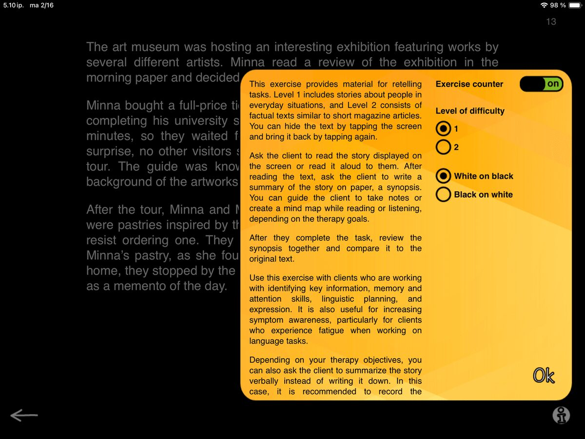
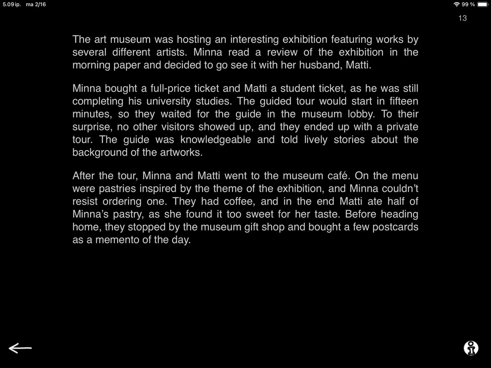
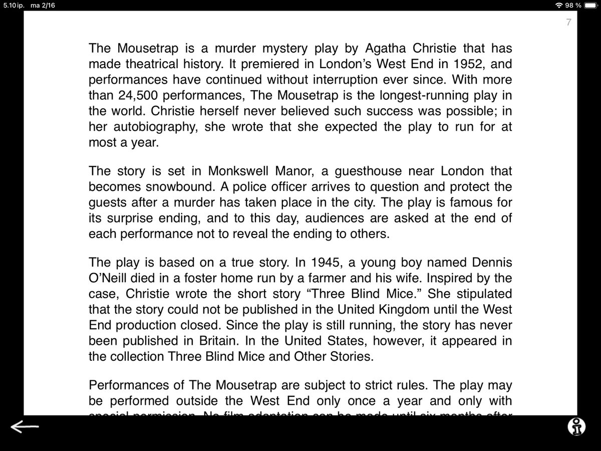

Synopsis is the last, but not least, task of the Reading exercises before moving on to the Speech Production category tasks.

So, what is a synopsis? Generally, it is defined as a brief summary of a chain of events, like an outline of the plot of a book, play, or movie. You can often elicit a synopsis by simply asking, “In a nutshell, what happens in the story?” Now, while this is a familiar concept and a task for writing a synopsis might seem straightforward, creating a synopsis is not for the faint of heart!
Building a synopsis requires identifying key information and finding connections between events. We need to identify and prioritize essential content while omitting information and details that are not essential for the big picture.
Once this is done and we have a plan in place, we turn to our linguistic planning and execution skills and begin formulating a logical, informative narrative. This places substantial demands on memory, attention, and reasoning, as well as the executive functions that support language planning and expression.
Sounds like a great task for a speech therapy session!


When you open Synopsis on your iPad, a story appears on screen. Ask the patient to read it and write a summary of the story on paper, i.e., create a synopsis. Guide the patient to take notes or create a mind map while reading, to support forming a coherent overview. You can hide the text by tapping the screen and bring it back by tapping again.

Synopsis has two levels reflecting two text styles. Level 1 has stories about people in everyday situations. In the example on the left, Minna and Matti are paying a visit to the museum.
Level 2 consists of factual texts similar to short magazine articles. Here the text talks about the (super fun!) play The Mousetrap by Agatha Christie.
With some clients, you can even turn level 2 type tasks into an ongoing activity: the client selects a short article they find interesting and prepares a synopsis to present at the following session. A great way to incorporate the client’s interests into therapy.
Synopsis tasks bring essential reading and communication skills into one focused activity. Zeroing in on what matters, linking events, and capturing the main idea in a few words strengthens both understanding and real-life functional communication.
This time I will leave you with a fun fact: We named Sanapsis after this task! Sanapsis is a play on the word sana (Finnish for “word”) and the word synopsis. Building a cohesive outline while leaving room for the reader (user) to fulfil the plot with their own expertise seems like the perfect reflection of the core idea behind the app. Synopsis as a task is also a stellar, super versatile workhorse, just like SanapsisPro!
Next up — Speech Production category 🤩